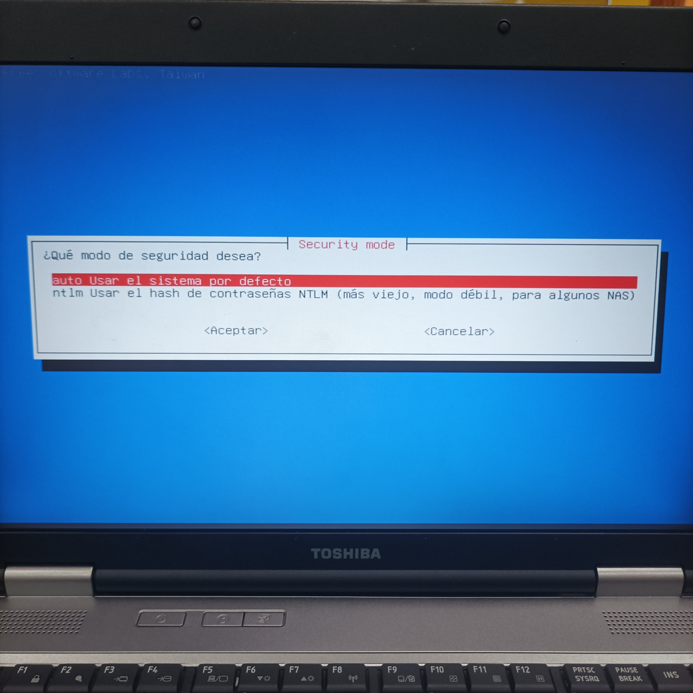

Clonezilla es un software portable que nos permitira crear y restaurar imagenes del sistema para que no perdamos nuestros datos.
En esta primera practica vamos a utilizar clonezilla en un equipo local y vamos a enseñar paso a paso su funcionamiento.
Creación de un USB de arranque:
Descargaremos la imagen ISO de clonezilla desde la moodle.
Luego tendremos que crear un USB de arranque con la imagen ISO.
Clonezilla:
Iniciamos el equipo y elegimos el USB como unidad de arranque, nos cargara la interfaz de clonezilla.
Seleccionaremos la primera opción: Clonezilla Live

ㅤ
Seleccionamos el idioma: Español.

ㅤ
Mantenemos la distribución del teclado

Finalmente iniciamos clonezilla

Nosotros queremos realizar una imagen del sistema del disco duro a un servidor, para ello seleccionamos la primera opción → device-image
Seleccionamos local_dev, aquí indicaremos el uso de un dispositivo local para copiar la imagen.
Seleccionamos la opción samba_server para clonar el disco a un servidor samba.

Utilizamos la opción de IP estatica
Configuramos la dirección IP manualmente.
Indicamos la dirección IP del servidor samba y la ruta donde queremos copiar los archivos
Seleccionamos la opción auto para la versión del protocolo SMB y para la seguridad.
Introducimos la contraseña del servidor samba.
Indicamos el modo de ejecución Beginner.
Indicamos la primera opción save_disk para guardar el disco local como imágen.
Guardamos la imágen con un nombre, yo lo dejare por defecto.
Seleccionamos el disco que queramos clonar.

Utilizamos la comprensión ZIP.
Omitimos las comprobaciones.
No ciframos la imégen.
Seleccionamos la opción de POweroff, para que cuando acabe el proceso se apage el ordenador.
Comenzara el proceso de creación y copiar la imagen al servidor samba, tenemos que indicar la contraseña.
Comenzara a clonar la imagen.